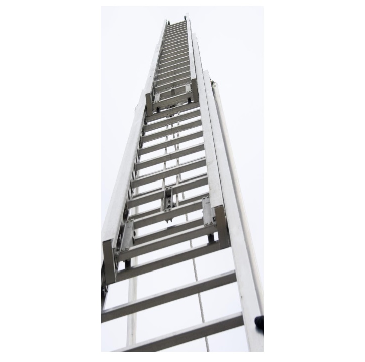
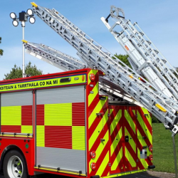
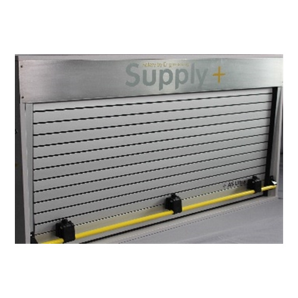

01 / FIRE SERVICE LADDERS
AS Fire Safety ladders
The TX ladder family is described as meeting BS EN 1147 requirements and rated for three-person rescue. The range includes triple-extension ladders.
View manufacturer details Enquire about laddersEquipment guide / 06
Explore fire service ladders and supporting vehicle access equipment.
Explore the range
Access range
The TX ladder family is described as meeting BS EN 1147 requirements and rated for three-person rescue. The range includes triple-extension ladders.
View manufacturer details Enquire about ladders
Manually operated beam gantries for fire and rescue, security, police and commercial sectors, designed to support access to high-level vehicle equipment.
View manufacturer details Enquire about gantries
AS Fire Safety vehicle shutters, including the Ultra shutter range, for equipment storage compartments.
View manufacturer details Enquire about shuttersLooking for another kind of equipment?
Browse all categories